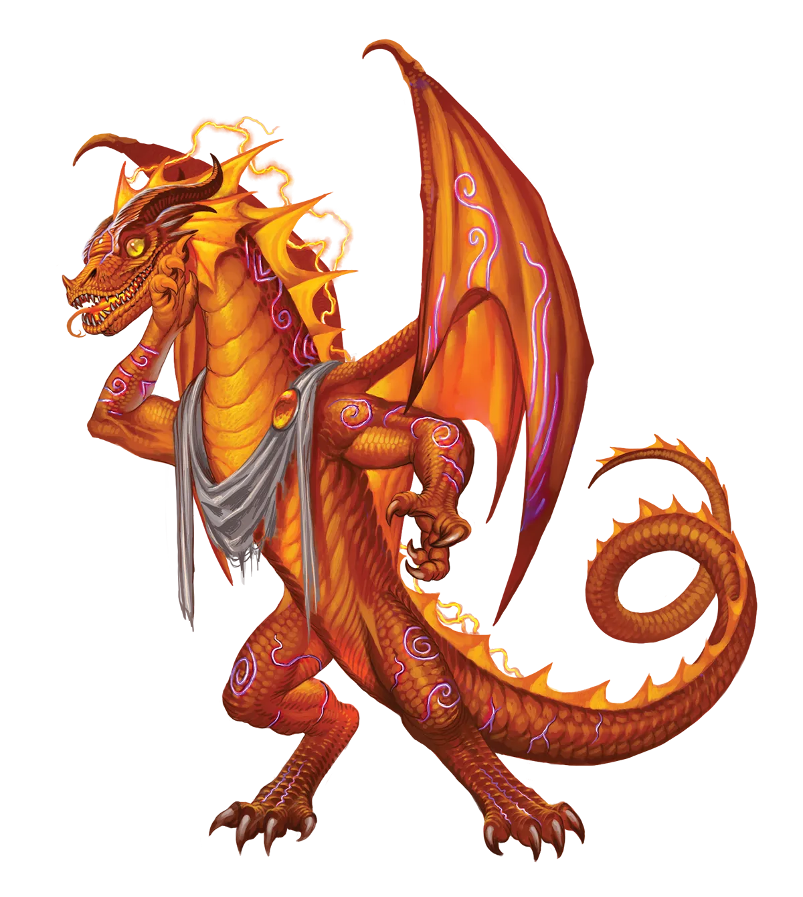
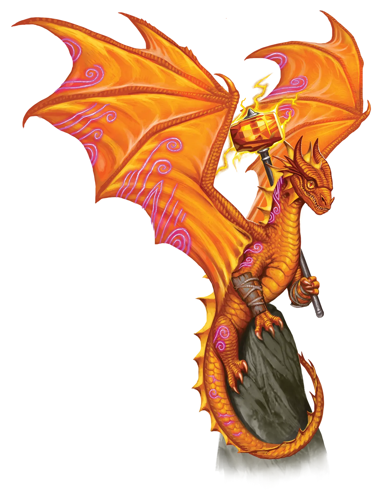

流通的价值
我们大多数人无法容忍别人用他们肮脏的爪子碰我们的宝库。你知道是怎么回事。品相越好，越稀有、越安全、越隐蔽，就越有价值。但琥珀龙基于他们分享和传播谣言的经验，对此有着不同寻常的看法。信息是他们宝库的一部分，对他们来说，信息价值增长是通过以他们选择的方式传播来实现的。所以他们有时也会对自己的其他宝藏做同样的事，将它们借给博物馆，以提升公众的关注和敬畏感，并增加他们宝库的价值。
琥珀龙 Amber Dragon |
|
|
琥珀龙是爱闲聊的八卦者，他们喜欢打探各种有趣的内幕消息，窥探别人的事务以帮忙解决问题，并散布谣言。因此，永恒之光仪式完美地融入了他们惯常的日常安排。这项仪式帮助他们维持一种快节奏的生活方式，使其能够跟上流言蜚语的变幻莫测和时尚潮流的起起落落，同时不断挑战自身极限并增长魔法。此外，这个仪式还给了他们一个完美的借口去插手管闲事，而琥珀龙对插手管闲事爱得深沉。与大多数传统派狂野龙一样，传统派琥珀龙与永光琥珀龙相处得异常融洽。混合的朋友群体可以无缝地交织他们的八卦技巧，以便传统派能够覆盖某些更为隐蔽的谣言。与此同时，永光龙也恢复了自身的能力，而永光琥珀龙的热情和节奏也能提升群体嗅探大量更公开谣言的能力。剩下要做的就是在一次即兴讨论会上把所有谣言都理清，然后决定哪些是最有趣、值得传播的。这个决定通常完全独立于任何验证谣言真伪的尝试，如果琥珀龙甚至决定要去验证的话。 永光琥珀龙喜欢加入冒险队伍，因为典型的冒险队伍代表了容纳他们所有最爱活动的理想载体。宝藏和秘密由冒险者们发现，这正是琥珀龙所喜欢的。不仅如此，冒险者们还以擅自干涉他人事务、越权解决问题或接管局面而闻名。琥珀龙喜爱队伍的掩护，因为它契合他们自身的利益。冒险者们往往是谣言之类的活跃温床，无论他们是四处游历、穿梭于各个任务之间，还是建立大本营，他们持续不断的势头都给永光琥珀龙提供了无数散布自己谣言的机会。此外，快节奏的刺激和风险肯定会为他们的魔法 充能。总的来说，永光琥珀龙与任何愿意接受巨龙偏好的团体都相处得很好，并且会迅速爱上那些希望他们为其下一次任务收集和传播情报，以及散布假消息让敌人捉摸不定的群体。一条琥珀龙会跟随这样的团体到天涯海角……至少，只要那里还有谣言可寻或可讲。永光琥珀龙偏爱那些能让他们融入人群、收集信息、并散布谣言直至其滚雪球般演化成独立生命的职业。吟游诗人和游荡者以更直接的方式处理这类任务。 流通的价值 我们大多数人无法容忍别人用他们肮脏的爪子碰我们的宝库。你知道是怎么回事。品相越好，越稀有、越安全、越隐蔽，就越有价值。但琥珀龙基于他们分享和传播谣言的经验，对此有着不同寻常的看法。信息是他们宝库的一部分，对他们来说，信息价值增长是通过以他们选择的方式传播来实现的。所以他们有时也会对自己的其他宝藏做同样的事，将它们借给博物馆，以提升公众的关注和敬畏感，并增加他们宝库的价值。 琥珀龙特质 Amber Dragon Traits 你出身于一脉热衷打探八卦与兜售情报的琥珀龙世系。 |
  |